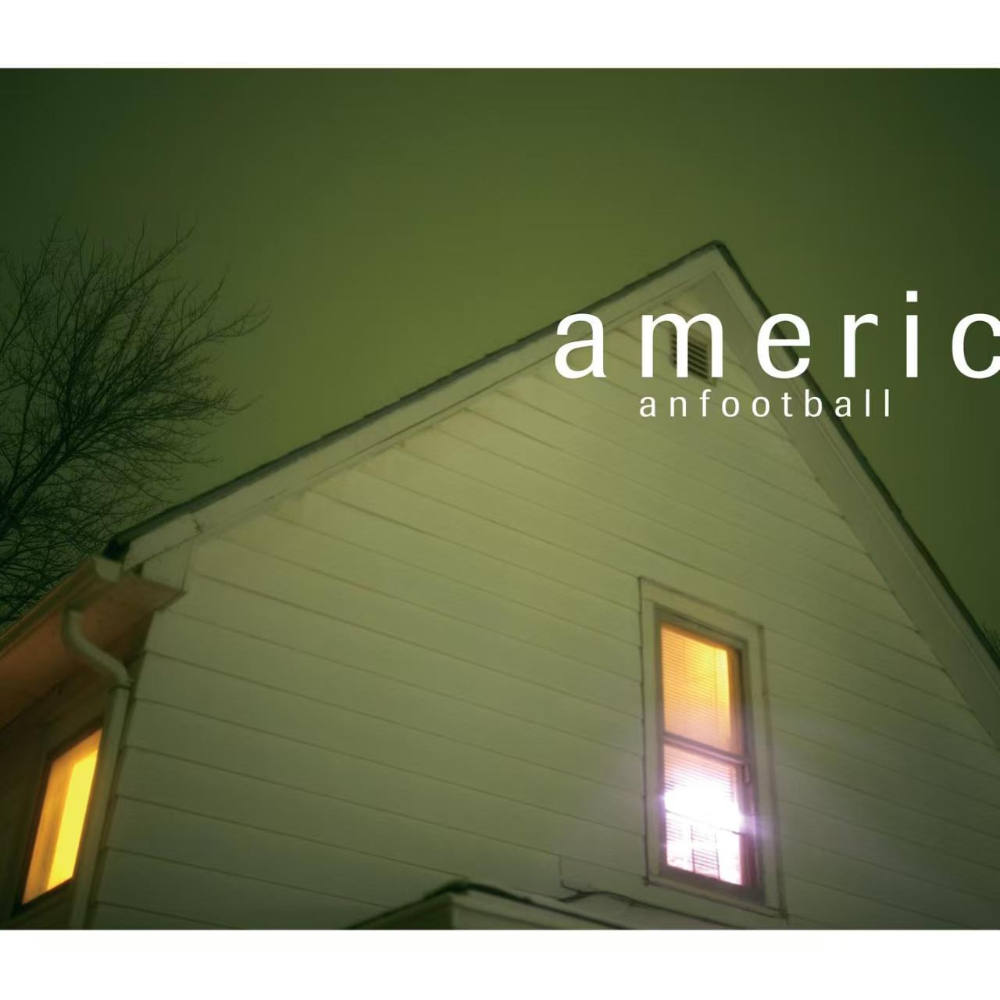
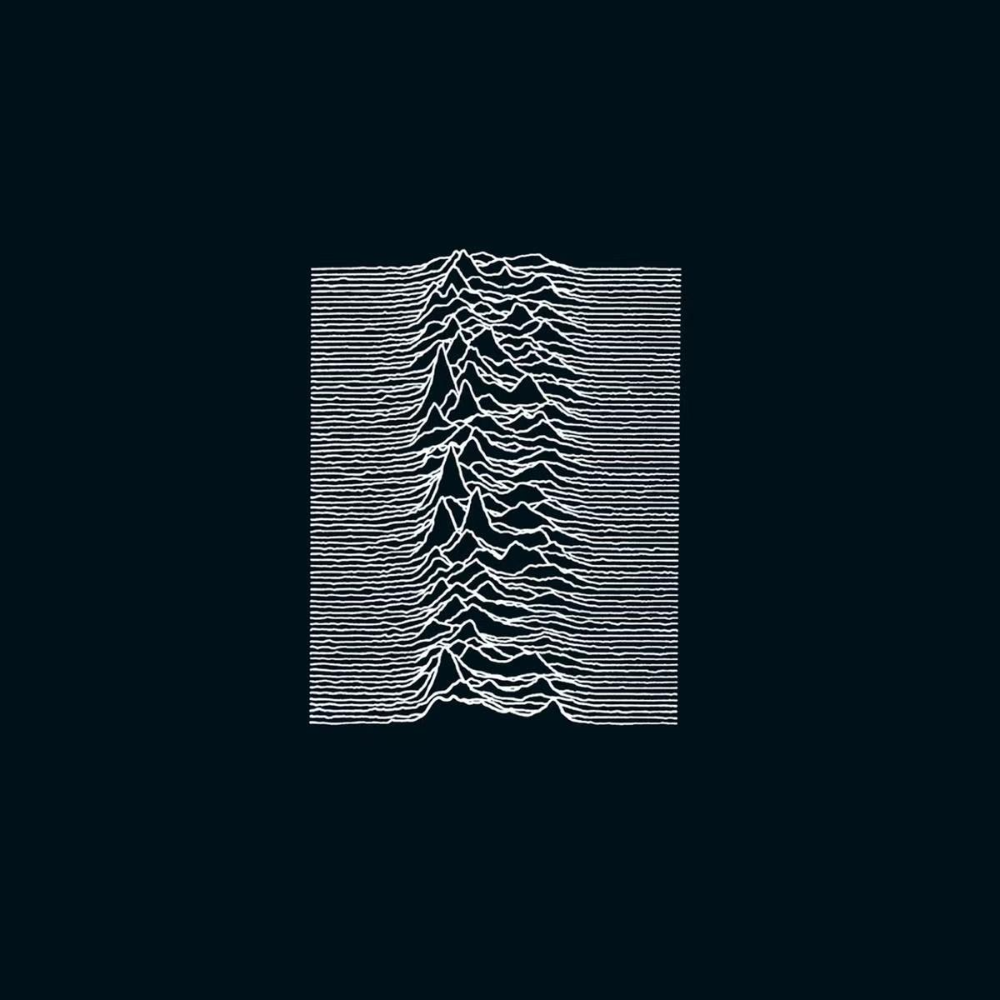
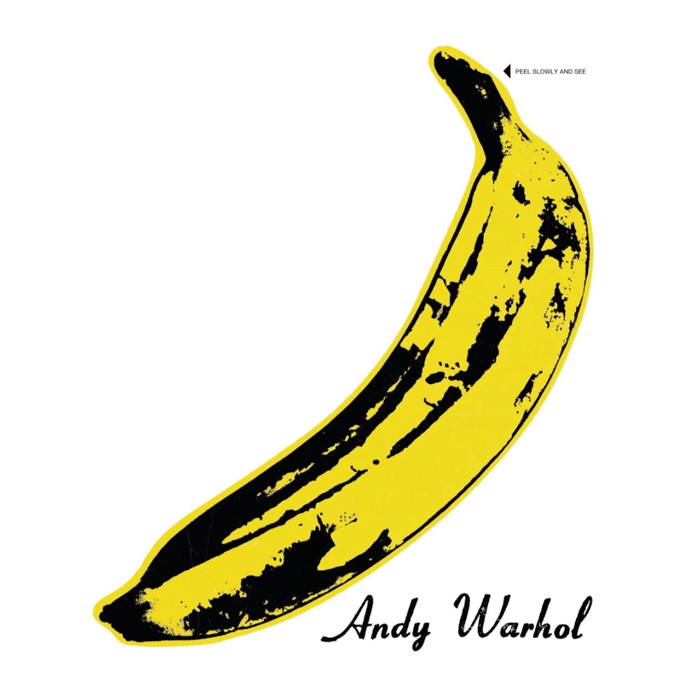
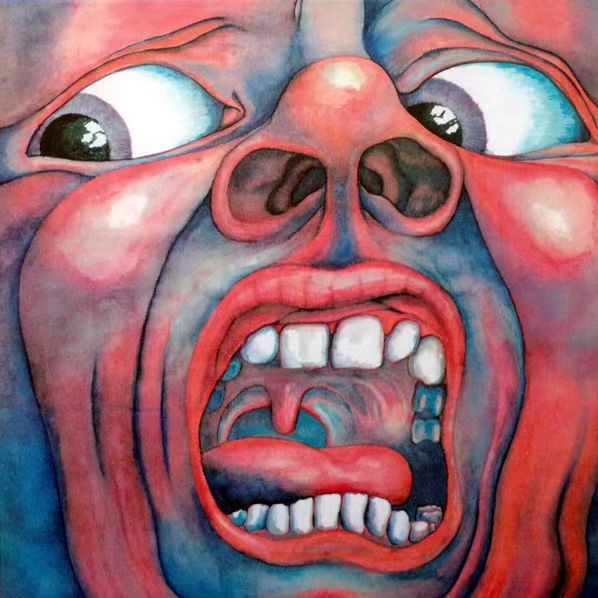
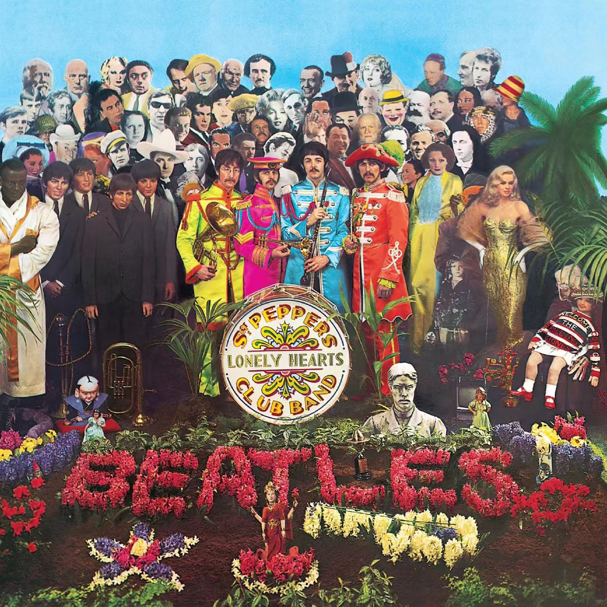

American Football
昏绿雾蒙蒙的夜色里，独栋小屋窗内漏出暖黄微光，American Football 同名首张专辑单看封面就裹满朦胧怅惘的少年愁绪，乐队 American Football，曲风为中西部情绪摇滚、数学摇滚。这张 1999 年发行的同名专是中西部 emo 流派的里程碑作品，诞生于乐队成员大学课余的简单录制，没有复杂商业化包装，只用简单乐器捕捉青春期迷茫、怀旧与别离的细碎心绪，沉寂多年后重新被听众发掘，成为小众情绪摇滚绕不开的经典。曲目旋律迂回柔和，吉他分解和弦细碎婉转，带着飘忽的空灵感，节奏舒缓松弛；编曲以多层干净吉他、轻缓贝斯与细碎鼓点为主，留白充足，没有厚重失真堆砌，氛围感空旷温柔；主唱声线清淡克制，不刻意嘶吼宣泄，轻声诉说般演绎心事；歌词聚焦少年独处、旧日恋情、小镇离别与朦胧乡愁，细碎日常的意象藏着挥之不去的遗憾。它摒弃摇滚激烈外放的表达，用清淡空旷的器乐勾勒青春期含蓄内敛的伤感，和喧闹的流行摇滚形成鲜明区别。适合阴雨天独处、深夜翻看旧回忆时完整聆听，如果你偏爱安静克制、满是怀旧氛围感的小众情绪摇滚，这张专辑会精准接住所有藏在心底的温柔遗憾。

Unknown Pleasures
深色底色上起伏交错的白色声波波形如同连绵压抑的山脉，极简线条勾勒出沉闷阴郁的氛围感，这是 Joy Division 的《Unknown Pleasures》，曲风为后朋克、哥特摇滚。这张 1979 年发行的处女专是后朋克流派开山级作品，封面波形图取自脉冲星天文图像，乐队用冰冷克制的器乐，记录主唱 Ian Curtis 深陷抑郁、迷茫压抑的精神状态，彻底脱离朋克躁动直白的表达，为后世哥特、暗潮音乐铺下基调。专辑旋律低沉迂回，没有上扬明亮的段落，全程裹挟着凝滞压抑的情绪走向；编曲以闷沉重复的贝斯线条、细碎冷冽的吉他回授与单薄平缓鼓点搭建，留白空旷，冷感十足；主唱嗓音低沉沙哑，克制压抑，没有嘶吼爆发，如同低声倾诉心底的荒芜；歌词围绕孤独、精神困顿、虚无与疏离感展开，意象灰暗又极具共情力。它褪去传统朋克的喧闹反抗，用冰冷空旷的声响描摹现代人无法排解的精神孤寂，是小众暗黑系摇滚无法绕开的经典标杆。适合深夜独处、情绪低落时完整循环，如果你厌倦热烈外放的摇滚曲风，偏爱冷寂克制、自带荒芜氛围感的复古后朋克，这张专辑会精准容纳你所有无处安放的低沉心绪。

The Velvet Underground & Nico
安迪・沃霍尔标志性波普风黄色香蕉图案简洁醒目，直白又充满先锋戏谑感，这是 The Velvet Underground 与 Nico 合作的同名专辑《The Velvet Underground & Nico》，曲风融合地下实验摇滚、艺术朋克、迷幻民谣。这张 60 年代发行的作品当年销量惨淡，却在多年后成为地下摇滚、独立音乐的精神源头，由波普艺术家安迪・沃霍尔操刀设计封面，乐队抛开当时主流迷幻摇滚的浪漫调性，直白描摹都市边缘人群、欲望与荒芜现实，深刻影响后世另类、车库、噪音摇滚的创作思路。专辑旋律反差鲜明，既有慵懒舒缓的民谣段落，也有嘈杂尖锐的噪音实验曲目；编曲糅合钝重贝斯、失真实验吉他、轻柔提琴与 Nico 冷感女声，粗糙原生的录制质感充满现场随性气息；演唱分为两种截然不同的表达，Lou Reed 松弛慵懒的口语式吟唱搭配 Nico 疏离清冷的低沉声线，碰撞出独特的割裂氛围感；歌词直面都市灰色地带、成瘾、孤独与情欲，摒弃美化修饰，直白又充满文学思辨。它挣脱了六十年代摇滚流行化的桎梏，用粗糙直白的实验声响撕开主流乐坛的伪装，是所有小众独立摇滚无法跳过的启蒙之作。适合安静独处或是翻阅老艺术画册时完整聆听，如果你厌倦包装精致、旋律套路化的流行摇滚，偏爱充满先锋反叛气质、直击现实的地下实验摇滚，这张专辑永远是值得反复挖掘的传世佳作。

In the Court of the Crimson King
浓烈撞色水彩绘制的扭曲嘶吼人脸极具视觉冲击，夸张紧绷的五官直接宣泄出癫狂躁动的情绪，这是 King Crimson 的《In the Court of the Crimson King》，曲风为前卫摇滚、迷幻艺术摇滚。这张 1969 年问世的处女专是前卫摇滚流派的开山里程碑，封面手绘出自艺术家 Barry Godber，乐队打破传统摇滚固定曲式结构，融合爵士、古典交响乐与迷幻噪音，用复杂多变的器乐编排搭建充满史诗感的暗黑叙事世界，彻底拓宽摇滚音乐的创作边界。专辑旋律走向诡谲多变，时而悠扬史诗时而急促狂乱，没有重复俗套的流行段落；编曲糅合萨克斯、木管、交响弦乐、失真吉他与厚重鼓组，层次繁复宏大，快慢段落切换充满戏剧张力；主唱声线兼具空灵吟唱与激烈嘶吼，情绪跨度极大，完美贴合画面里撕裂般的情绪表达；歌词围绕暗黑寓言、神话、人性混沌与虚无展开，意象晦涩宏大，充满史诗悲剧氛围。它抛弃早期摇滚简单直白的表达逻辑，用古典交响与摇滚碰撞出厚重诡谲的史诗质感，是前卫摇滚史上无法逾越的标杆作品。适合深夜静下心沉浸式完整聆听，如果你厌倦结构单一、旋律套路化的普通摇滚，偏爱编排宏大、充满暗黑史诗氛围感的先锋前卫摇滚，这张专辑会带给你一场充满戏剧冲突的沉浸式听觉史诗。

Sgt. Pepper's Lonely Hearts Club Band
铺满各色复古人像与花艺布景的超现实油画封面华丽奇幻，充满迷幻戏剧氛围，这是 The Beatles 的《Sgt. Pepper's Lonely Hearts Club Band》，曲风融合迷幻摇滚、管弦流行、艺术摇滚与复古民谣。这张 1967 年发行的概念专是摇滚史上划时代的里程碑，披头士全员跳出传统乐队创作模式，以虚构乐团为叙事主线，大量引入古典管弦、印度乐器与实验录音技术，将专辑打造成完整连贯的沉浸式故事，彻底定义现代概念专辑的创作标准，深刻影响后世所有艺术摇滚、独立音乐的创作思路。专辑旋律天马行空，既有轻快复古的流行小调，也有诡谲空灵的迷幻段落，情绪跨度丰富完整；编曲大胆糅合交响弦乐、西塔琴、铜管乐器与实验音效，配器繁复精巧，打破摇滚仅靠三大件的固有局限；四位成员轮流担纲主唱，声线温柔和谐，和声编排细腻梦幻，兼具叙事感与浪漫氛围感；歌词围绕幻想、孤独、都市众生、生命与梦境展开，意象浪漫诡谲，充满 60 年代嬉皮士的浪漫人文思考。它推翻了摇滚单曲优先的行业逻辑，用完整统一的概念、先锋编曲与艺术化封面设计，把流行音乐提升至独立艺术作品的高度，是摇滚史上无可替代的传世经典。适合闲暇午后完整沉浸式聆听，如果你偏爱充满想象力、编曲华丽丰富的复古迷幻艺术摇滚，这张专辑永远是必须深度感受的听觉艺术品。